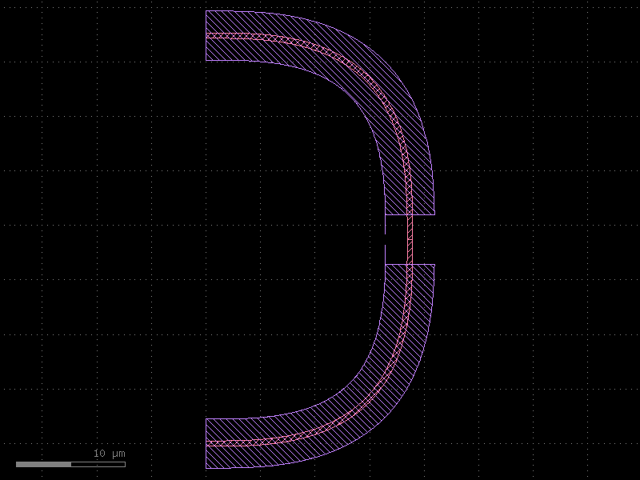
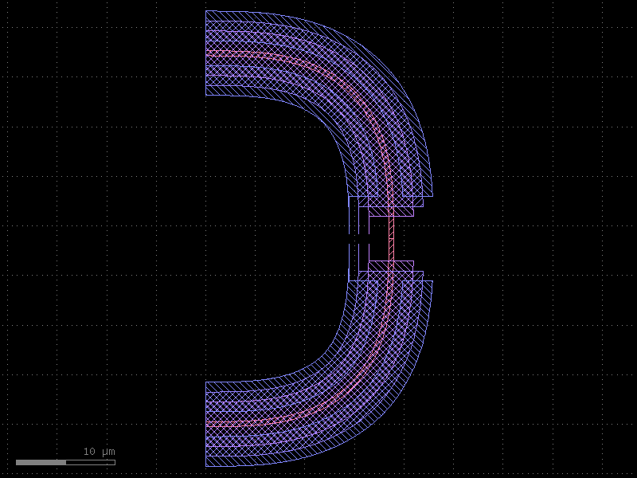
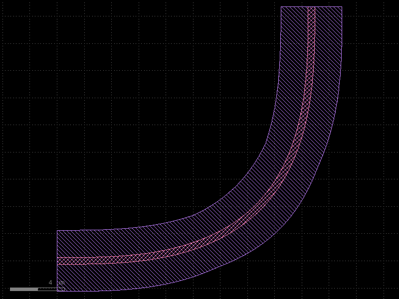
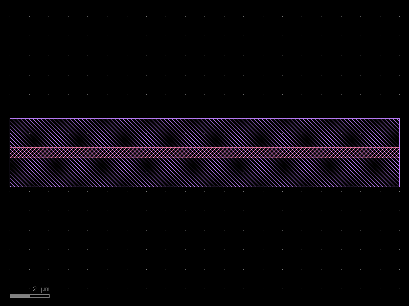
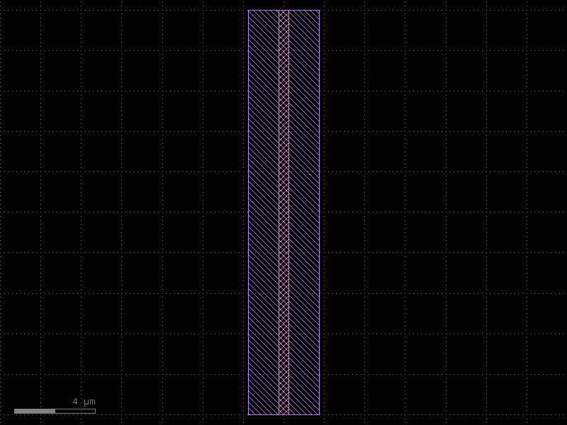
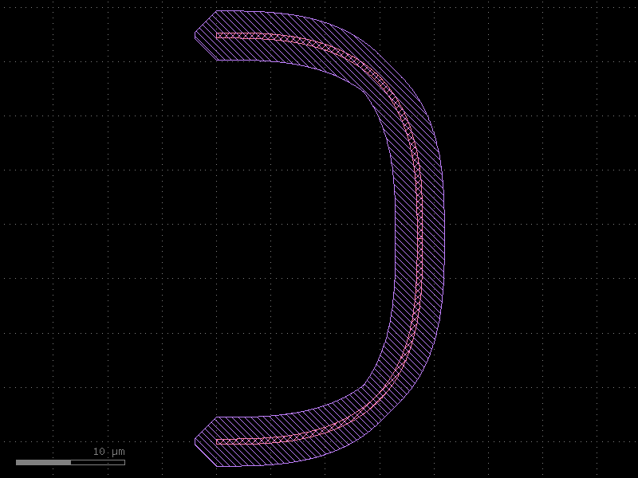

KCell Enclosure
KCellEnclosure is the cell-level counterpart to LayerEnclosure. Where
LayerEnclosure processes the geometry of a single component, KCellEnclosure:
- Recurses into all sub-cells (
begin_shapes_rec) to collect geometry. - Merges the collected geometry into one
Regionbefore computing the expansion. - Applies one or more
LayerEnclosurerules in a single pass.
This guarantees a continuous cladding across component joints — no gaps at the seams between adjacent waveguides or bends.
| Class | Scope | Gap-free joins |
|---|---|---|
LayerEnclosure |
one component at a time | no — each component enclosed separately |
KCellEnclosure |
entire assembled cell | yes — geometry merged first |
The Layer Enclosure page introduces LayerEnclosure and shows a
basic KCellEnclosure example. This page covers advanced usage: multiple enclosures,
tiling parameters, and the directional Minkowski methods.
Setup
import kfactory as kf
class LAYER(kf.LayerInfos):
WG: kf.kdb.LayerInfo = kf.kdb.LayerInfo(1, 0)
WGCLAD: kf.kdb.LayerInfo = kf.kdb.LayerInfo(2, 0)
SLAB: kf.kdb.LayerInfo = kf.kdb.LayerInfo(3, 0)
NPP: kf.kdb.LayerInfo = kf.kdb.LayerInfo(4, 0)
DEEPOX: kf.kdb.LayerInfo = kf.kdb.LayerInfo(5, 0)
L = LAYER()
kf.kcl.infos = L
1 · Single enclosure
The minimal usage: wrap one LayerEnclosure in a KCellEnclosure and call
apply_minkowski_tiled on the finished cell.
The key rules are:
- Call apply_minkowski_tiled inside the @kf.cell function, before return c.
- The LayerEnclosure must have main_layer set so the processor knows which layer
to expand.
clad_enc = kf.LayerEnclosure(
dsections=[(L.WGCLAD, 2.0)],
name="WG_CLAD",
main_layer=L.WG,
kcl=kf.kcl,
)
kcell_enc = kf.KCellEnclosure([clad_enc])
@kf.cell
def bend_pair_clad(radius: float, width: float) -> kf.KCell:
"""Two euler bends with unified cell-level cladding."""
c = kf.KCell()
bend_fn = kf.factories.euler.bend_euler_factory(kcl=kf.kcl)
b1 = c << bend_fn(width=width, radius=radius, layer=L.WG, angle=90)
b2 = c << bend_fn(width=width, radius=radius, layer=L.WG, angle=90)
# Join b2 to b1 so the waveguides share a port
b2.connect("o1", b1.ports["o2"])
c.add_ports(b1.ports.filter(port_type="optical"))
c.add_ports(b2.ports.filter(port_type="optical"))
c.auto_rename_ports()
# Apply unified cladding to the finished assembly
kcell_enc.apply_minkowski_tiled(c)
return c
bend_pair_clad(radius=10, width=0.5).plot()

The WGCLAD forms a single, continuous band around both bends — there is no gap at the port where they connect.
2 · Multiple enclosures in one KCellEnclosure
Pass a list of LayerEnclosure objects to cover several output layers in a single
apply_minkowski_tiled call. The processor iterates over them in order.
slab_enc = kf.LayerEnclosure(
dsections=[(L.SLAB, 3.0)],
name="WG_SLAB",
main_layer=L.WG,
kcl=kf.kcl,
)
npp_enc = kf.LayerEnclosure(
dsections=[(L.NPP, 1.0, 4.0)], # annular: 1 µm to 4 µm from WG edge
name="WG_NPP",
main_layer=L.WG,
kcl=kf.kcl,
)
# Combine three enclosures: cladding + slab + implant
multi_enc = kf.KCellEnclosure([clad_enc, slab_enc, npp_enc])
@kf.cell
def bend_pair_multi(radius: float, width: float) -> kf.KCell:
"""Two euler bends with multi-layer cell-level enclosure."""
c = kf.KCell()
bend_fn = kf.factories.euler.bend_euler_factory(kcl=kf.kcl)
b1 = c << bend_fn(width=width, radius=radius, layer=L.WG, angle=90)
b2 = c << bend_fn(width=width, radius=radius, layer=L.WG, angle=90)
b2.connect("o1", b1.ports["o2"])
c.add_ports(b1.ports.filter(port_type="optical"))
c.add_ports(b2.ports.filter(port_type="optical"))
c.auto_rename_ports()
multi_enc.apply_minkowski_tiled(c)
return c
bend_pair_multi(radius=10, width=0.5).plot()
[32m2026-05-12 10:26:50.242[0m | [31m[1mERROR [0m | [36mkfactory.kcell[0m:[36mname[0m:[36m698[0m - [31m[1mName conflict in kfactory.kcell::name at line 698
Renaming Unnamed_4 (cell_index=4) to bend_euler_W0p5_R10_LWG_ENone_A90_R150 would cause it to be named the same as:
- bend_euler_W0p5_R10_LWG_ENone_A90_R150 (cell_index=1), function_name=bend_euler, basename=None[0m

Three generated layers are visible: - WGCLAD — 2 µm uniform cladding - SLAB — 3 µm uniform slab - NPP — annular implant from 1 µm to 4 µm outside the WG edge
3 · Tiling parameters
apply_minkowski_tiled uses KLayout's TilingProcessor for parallel computation.
The key parameters are:
| Parameter | Default | Effect |
|---|---|---|
tile_size |
None (auto) |
Tile edge length in µm. Auto = max(10×max_d, 200 µm). |
n_pts |
64 | Points in the circular kernel. Fewer = faster but more angular corners. |
n_threads |
None (all CPUs) |
Override thread count (useful in CI). |
carve_out_ports |
True |
Remove cladding from port openings so waveguides remain accessible. |
Effect of n_pts on corner shape
enc_coarse = kf.KCellEnclosure([clad_enc])
enc_fine = kf.KCellEnclosure([clad_enc])
@kf.cell
def single_bend_npts(radius: float, width: float, n_pts: int) -> kf.KCell:
"""Euler bend with variable n_pts for corner resolution."""
c = kf.KCell()
b = c << kf.factories.euler.bend_euler_factory(kcl=kf.kcl)(
width=width, radius=radius, layer=L.WG, angle=90
)
c.add_ports(b.ports)
c.auto_rename_ports()
kf.KCellEnclosure([clad_enc]).apply_minkowski_tiled(c, n_pts=n_pts)
return c
# n_pts=8 → octagonal corners
single_bend_npts(radius=10, width=0.5, n_pts=8).plot()
[32m2026-05-12 10:26:50.995[0m | [31m[1mERROR [0m | [36mkfactory.kcell[0m:[36mname[0m:[36m698[0m - [31m[1mName conflict in kfactory.kcell::name at line 698
Renaming Unnamed_7 (cell_index=7) to bend_euler_W0p5_R10_LWG_ENone_A90_R150 would cause it to be named the same as:
- bend_euler_W0p5_R10_LWG_ENone_A90_R150 (cell_index=1), function_name=bend_euler, basename=None
- bend_euler_W0p5_R10_LWG_ENone_A90_R150 (cell_index=4), function_name=bend_euler, basename=None[0m

With n_pts=8 the corners of the WGCLAD are octagonal. The default n_pts=64
produces near-circular corners.
# n_pts=64 → smooth circular corners (default)
single_bend_npts(radius=10, width=0.5, n_pts=64).plot()
[32m2026-05-12 10:26:51.107[0m | [31m[1mERROR [0m | [36mkfactory.kcell[0m:[36mname[0m:[36m698[0m - [31m[1mName conflict in kfactory.kcell::name at line 698
Renaming Unnamed_10 (cell_index=10) to bend_euler_W0p5_R10_LWG_ENone_A90_R150 would cause it to be named the same as:
- bend_euler_W0p5_R10_LWG_ENone_A90_R150 (cell_index=1), function_name=bend_euler, basename=None
- bend_euler_W0p5_R10_LWG_ENone_A90_R150 (cell_index=4), function_name=bend_euler, basename=None
- bend_euler_W0p5_R10_LWG_ENone_A90_R150 (cell_index=7), function_name=bend_euler, basename=None[0m
Controlling threads for CI environments
# Use a fixed thread count for reproducible timing in CI
kcell_enc.apply_minkowski_tiled(c, n_threads=1)
4 · apply_minkowski_y — directional enclosure for horizontal waveguides
apply_minkowski_tiled uses a circle as the Minkowski kernel, producing rounded
corners on all sides. For horizontal straight waveguides this is often
undesirable — you want the cladding to extend only above and below the waveguide
(Y direction) without rounding the ends.
apply_minkowski_y uses a vertical edge (0, −d) → (0, d) as the kernel:
- Expands in the Y direction by d.
- No expansion in the X direction — cladding ends flush with the waveguide ends.
This is useful when the port openings must remain clear, or when the cladding rectangle must match the exact waveguide length.
clad_enc_y = kf.LayerEnclosure(
dsections=[(L.WGCLAD, 1.5)],
name="CLAD_Y",
main_layer=L.WG,
kcl=kf.kcl,
)
kcell_enc_y = kf.KCellEnclosure([clad_enc_y])
@kf.cell
def straight_clad_y(length: float, width: float) -> kf.KCell:
"""Horizontal straight waveguide with Y-only cladding."""
c = kf.KCell()
s = c << kf.factories.straight.straight_dbu_factory(kcl=kf.kcl)(
length=kf.kcl.to_dbu(length),
width=kf.kcl.to_dbu(width),
layer=L.WG,
)
c.add_ports(s.ports)
c.auto_rename_ports()
# Expand cladding in Y only — no rounding at port ends
kcell_enc_y.apply_minkowski_y(c)
return c
straight_clad_y(length=20.0, width=0.5).plot()

The WGCLAD (layer 2/0) extends 1.5 µm above and below the waveguide but ends exactly at the port faces — no overextension at the ends.
5 · apply_minkowski_x — directional enclosure for vertical waveguides
apply_minkowski_x is the X-direction counterpart. It uses a horizontal edge
(−d, 0) → (d, 0) as the kernel, expanding only left and right. This is the
correct choice for waveguides oriented vertically (angle 90° / 270°).
kcell_enc_x = kf.KCellEnclosure([clad_enc_y])
@kf.cell
def vertical_straight_clad_x(length: float, width: float) -> kf.KCell:
"""Vertical straight waveguide with X-only cladding."""
c = kf.KCell()
s = c << kf.factories.straight.straight_dbu_factory(kcl=kf.kcl)(
length=kf.kcl.to_dbu(length),
width=kf.kcl.to_dbu(width),
layer=L.WG,
)
# Rotate 90° so the waveguide runs vertically
s.drotate(90)
c.add_ports(s.ports)
c.auto_rename_ports()
kcell_enc_x.apply_minkowski_x(c)
return c
vertical_straight_clad_x(length=20.0, width=0.5).plot()
[32m2026-05-12 10:26:51.411[0m | [31m[1mERROR [0m | [36mkfactory.kcell[0m:[36mname[0m:[36m698[0m - [31m[1mName conflict in kfactory.kcell::name at line 698
Renaming Unnamed_16 (cell_index=16) to straight_W500_L20000_LWG_ENone would cause it to be named the same as:
- straight_W500_L20000_LWG_ENone (cell_index=13), function_name=straight, basename=None[0m

6 · apply_minkowski_custom — custom kernel shape
For full control over the expansion shape pass a callable to
apply_minkowski_custom. The callable receives the expansion distance d (in DBU)
and must return a kdb.Edge, kdb.Polygon, or kdb.Box.
Diamond kernel
A diamond (rotated square) rounds corners at 45° — a good compromise between a box (very angular) and a circle (many points, slower).
def diamond(d: int) -> kf.kdb.Polygon:
"""Return a diamond-shaped polygon with half-diagonal d."""
return kf.kdb.Polygon(
[
kf.kdb.Point(0, d),
kf.kdb.Point(d, 0),
kf.kdb.Point(0, -d),
kf.kdb.Point(-d, 0),
]
)
kcell_enc_diamond = kf.KCellEnclosure([clad_enc])
@kf.cell
def bend_pair_diamond(radius: float, width: float) -> kf.KCell:
"""Two euler bends with diamond-kernel cell-level cladding."""
c = kf.KCell()
bend_fn = kf.factories.euler.bend_euler_factory(kcl=kf.kcl)
b1 = c << bend_fn(width=width, radius=radius, layer=L.WG, angle=90)
b2 = c << bend_fn(width=width, radius=radius, layer=L.WG, angle=90)
b2.connect("o1", b1.ports["o2"])
c.add_ports(b1.ports.filter(port_type="optical"))
c.add_ports(b2.ports.filter(port_type="optical"))
c.auto_rename_ports()
kcell_enc_diamond.apply_minkowski_custom(c, shape=diamond)
return c
bend_pair_diamond(radius=10, width=0.5).plot()
[32m2026-05-12 10:26:51.476[0m | [31m[1mERROR [0m | [36mkfactory.kcell[0m:[36mname[0m:[36m698[0m - [31m[1mName conflict in kfactory.kcell::name at line 698
Renaming Unnamed_19 (cell_index=19) to bend_euler_W0p5_R10_LWG_ENone_A90_R150 would cause it to be named the same as:
- bend_euler_W0p5_R10_LWG_ENone_A90_R150 (cell_index=1), function_name=bend_euler, basename=None
- bend_euler_W0p5_R10_LWG_ENone_A90_R150 (cell_index=4), function_name=bend_euler, basename=None
- bend_euler_W0p5_R10_LWG_ENone_A90_R150 (cell_index=7), function_name=bend_euler, basename=None
- bend_euler_W0p5_R10_LWG_ENone_A90_R150 (cell_index=10), function_name=bend_euler, basename=None[0m

The WGCLAD corners are diamond-shaped (45° chamfers).
7 · Method reference
| Method | Kernel | Expands | Best for |
|---|---|---|---|
apply_minkowski_tiled |
circle (n_pts points) |
all directions | complex / curved cells |
apply_minkowski_y |
vertical edge | Y only | horizontal straight waveguides |
apply_minkowski_x |
horizontal edge | X only | vertical straight waveguides |
apply_minkowski_custom(c, shape) |
user-supplied | custom | custom corner shapes |
Directional method comparison
| Method | Corners | Port openings | Computation |
|---|---|---|---|
apply_minkowski_tiled |
rounded | carved out (carve_out_ports=True) |
tiled, parallel |
apply_minkowski_y |
square (no rounding) | flush at port ends | single-pass |
apply_minkowski_x |
square (no rounding) | flush at port ends | single-pass |
apply_minkowski_custom |
matches kernel | depends on kernel | single-pass |
Quick-start checklist
- Always set
main_layer=on everyLayerEnclosureused insideKCellEnclosure. - Call the apply method inside the
@kf.cellfunction, beforereturn c. - For large or curved cells use
apply_minkowski_tiled(parallel, circle kernel). - For straight waveguides use
apply_minkowski_y/apply_minkowski_xto keep cladding flush with port faces. - Adjust
n_ptsinapply_minkowski_tiledto trade corner resolution for speed.
See Also
| Topic | Where |
|---|---|
| Layer enclosures (single-layer) | Enclosures: Layer Enclosure |
| Cross-sections (port geometry) | Cross-Sections |
| Boolean / region operations | Core Concepts: Geometry |
| Tile-based fill | Utilities: Fill |